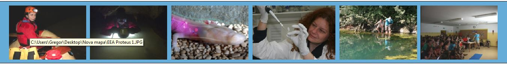

S človeško ribico si delimo odvisnost od podtalnice
Vrednost projekta: 34.006,20 EUR (prispevek EGP in Norveškega
finančnega mehanizma: 19.985,22 EUR)
Trajanje projekta: 12
mesecev (1. 1. 2015 – 31. 12. 2015)
Prijavitelj / vodilni partner: Društvo za jamsko biologijo / Jamski laboratorij Tular
Partnerji: Biološki inštitut Jovana Hadžija pri ZRC SAZU, Občina Črnomelj in Občina Dobrepolje
Informacije, predlogi in pritožbe
Gregor Aljančič, vodja
projekta: info@tular.si, mob +386 (0)31 804
163
Fb:
https://www.facebook.com/TularCaveLaboratory; Twitter:
@TularCaveLab
Povzetek projekta
Izzivi in širše javne prioritete
Človeška ribica (Proteus anguinus), svetovno znana jamska dvoživka, je prednostna vrsta omrežja Natura 2000, še vedno pa brez načrta varovanja in monitoringa. Velik del pitne vode v Sloveniji se napaja iz jamskega habitata človeške ribice.
Dolgoročno varstvo človeške ribice in njenega podzemeljskega habitata
- stalno ozaveščanje javnosti
- inovativne metode monitoringa
- mreženje NVO in zagovorništvo.
Izidi projekta
- višje zavedanje javnosti o ranljivosti človeške ribice in podtalnice
- metodološke osnove za bodoči monitoring človeške ribice
- izboljšana naravovarstvena praksa
- okrepljen nadzor NVO nad izvajanjem okoljske zakonodaje in mednarodnih zavez.
Pričakovani rezultati
- tri inovativne metode monitoringa, pripravljene za uporabo
- predavanja z uporabo inovativnega izobraževalnega orodja e-Proteus (neposredni videoprenos človeške ribice in njenega nedostopnega habitata v učilnico)
- mreža NVO
- delavnica “SOS Proteus”: reševanje človeških ribic, ki jih odplakne iz podzemlja
- zahteva za izboljšanje naravovarstvene prakse vložena na Ministrstvo za okolje in prostor.
Koristniki projekta
Šolska mladina (vključno z mladino romske skupnosti), raziskovalne in naravovarstvene organizacije, lokalna skupnost (občini Črnomelj in Dobrepolje).

Projekt sofinancirata Finančni mehanizem EGP in Norveški finančni mehanizem 2009-2014
Izvirni zapisi o projektih in laboratoriju. Datumi in zgodovinsko izrazje so ohranjeni.